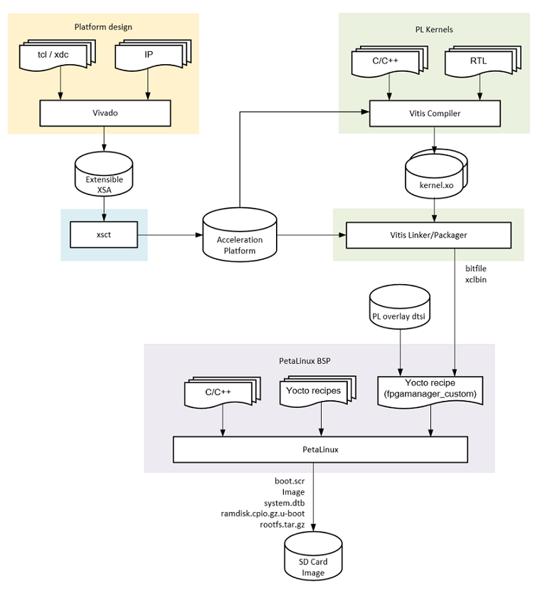
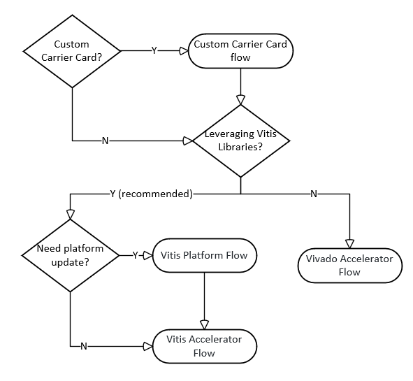

Kria SOM Accelerator and Custom Carrier Card Firmware Development¶
With Kria SOMs, you can create and test your own custom applications and programmable logic (PL) functions. Use one or more of the Xilinx development tools (such as Vivado™, Vitis™, and PetaLinux) and open source tools (such as Linux Device Tree Generator/Compiler) to build your applications. This document focuses on the overall concept of the different PL hardware generation flows. Whenever available, this document also points to detailed step-by-step tutorials.
The Kria SOM hardware design consist of the SOM (K26) and a carrier card. The carrier card (CC) can be a Xilinx carrier card (e.g. KV260), or a custom carrier card. The Kria K26 SOM uses the XCK26 Zynq MPSoC chip containing both the Processor Subsystem (PS) and Programmable Logic (PL). The Kria Starter Kit reference designs have a Linux operating system running in PS, which then runs applications that utilize HW accelerators implemented in PL. The PL design or bitstream is generated using Vivado and/or Vitis, and it is integrated with Linux software components using PetaLinux.
The SOM board files in Vivado captures the hardware configuration of K26 SOM and maps connectivity to Xilinx provided carrier card peripherals. Developers can use Vivado to generate a custom HW design which may include a different peripheral configuration set than pre-built Xilinx reference designs. Vitis provides a design abstraction for provided “Vitis platforms” in which a subset of CC physical interface peripherals is defined and developers can focus on generating an acceleration “overlay” within the context of that platform. Developers can leverage Xilinx provided Kria Vitis platforms that align to a given CC or they can create their own Vitis platform. Developers can use the same generalized flows when creating platforms and designs for their own custom carrier card.
Note that the SOM Kria Flow is slightly different than legacy ZynqMPSoC flow. Please see their difference in Bitstream Management on Kria SOM .
Below is the tool flow that Xilinx uses to generate reference designs for Kria SOM.
Introduction¶
In this document, we will outline 4 workflows:
SOM Developer Flow in the later part of the document gives an overview of how to choose the best flow for developers.
Below is an overview of generalized steps required to develop, build, and run applications on SOM.
Generate HW Configuration¶
The MPSoC device requires a boot-time HW configuration for the PS. This is defined in Vivado and developers must configure the MIO related I/O in this configuration step if creating a custom CC. This step is already completed if using a Xilinx provided Starter Kit BSP and/or the Vivado SOM board files which provide automation for configuring the MIO that are fixed by the SOM HW design.
Generate Device Boot Firmware¶
The boot firmware is the software that runs to support the initialization of the MPSoC platform and is captured as a BOOT.BIN design artifact. If using a Xilinx Starter Kit this step is already completed for developers. However, if developers want to create a custom boot firmware, an A/B user boot partition is provided for easier testing. Refer to Firmware Update chapter of UG1089 or wiki. The SOM Starter Kit uses a primary/secondary boot device flow where the primary boot device contains the BOOT.BIN and the secondary device contains the OS components.
For Kria Starter Kits the QSPI primary boot device (BOOT.BIN) contains:
PMU firmware
FSBL
ATF
U-Boot
For Kria Starter Kits, the SD card secondary device contains:
boot.src: script read by U-bootImage: Linux Kernel binary
ramdisk.cpio.gz.u-boot: Linux initramfssystem.dtb: Linux device Treerootfs.tar.gz: root file system
Build Application PL HW Design¶
The PL design defines the configuration of the PL domain of the MPSoC device on SOM, containing the PL accelerator(s). The PL configuration is defined by the user design and can be captured in Vivado or Vitis based workflows at different levels of abstraction. The design artifact captured from any of the workflows for designing a PL configuration is a bitstream (.bit, often required in .bit.bin form). This bitstream can be loaded at boot as part of the device boot firmware, or after the OS boot via a runtime library.
If using a Xilinx Kria Starter Kit reference application, the bitstream is provided pre-built and always loaded after Linux boot.
Build Application Software¶
The application software refers to the SW that runs on the APU and/or RPU PS targets. This SW can be developed through Vitis, PetaLinux, or other open-source tools (such as Yocto). With the exception for custom Carrier Card Flow, when developing an application for SOM, developers usually do not need to rebuild entire OS. They just need to generate their application and move it onto target file system to execute.
If using a Xilinx Kria Starter Kit reference designs, applications are provided pre-built.
Deploy & Test On-Target¶
Once applications and custom HW designs are generated the user needs to move them to target.
If using the Kria Starter Kit with the Linux reference design, developers can also use on-target utilities to move their applications over and test.
If using the Kria Starter Kit a user can use various boot-modes to test monolithic boot of application software using these TCL scripts to override the Starter Kit hardware defined QSPI32 boot mode.
Prerequisites and Assumptions¶
This document assumes you are using Xilinx tools 2021.1 or higher.
Depending on the scope of customization and selected workflow, different tools will be needed. Please refer to various tool flow sections before determining which tools to install:
PetaLinux tools installation
Vitis tools installation (this will include Vivado)
Vivado tools installation (if Vitis is not required and installed) - For versions 21.2 and lower, apply the Y2K22 patch
Device Tree Generator (DTG) and Device Tree Compiler (DTC) installation, refer to Build Device Tree Blob
XSCT (will be installed as part of Vivado or Vitis)
PetaLinux SOM StarterKit BSP (e.g.
xilinx-k26-starterkit-2021.1-final.bsp) - Download the latest SOM Starter Kit BSP from the SOM WikiKv260-vitis git repository, which contains KV260 Vitis platforms, Vitis overlay projects, and their associated Makefiles.
Flows |
Vitis |
PetaLinux |
Vivado |
Tools for DTBO |
|---|---|---|---|---|
Vitis Accelerator Flow |
Required |
Optional |
Not Needed |
Not Needed |
Vitis Platform Flow |
Required |
Optional |
Required |
(XSTC, DTG, DTC) or Petalinux |
Vivado Accelerator Flow |
Not Needed |
Optional |
Required |
(XSTC, DTG, DTC) or Petalinux |
Custom Carrier Card Flow |
Not Needed |
Required |
Required |
Not Needed |
Baremetal Flow |
Required |
Not Needed |
Required |
Not Needed |
After you understand the SOM developer flow (shown below), you can refer to the following table for tool requirements to generate PL portion of your applications. Please
Note
Depending on your decisions, more than one flow can be involved. Refer to the decision tree shown below.
SOM Developer Flow¶
Developers may only need to touch parts of the flow to put their own applications on SOM. Based on the scope of hardware and design change there are four different flows developers can leverage when developing a custom application. The choice of flow depends on HW target definition, where the target design intersects with Xilinx’s released reference designs, and tool preference. The following is a decision tree to help guide developers through appropriate workflows:
If developers plan to create their own custom carrier card, they will need to first go through the custom carrier card flow before generating their design through the Vitis or Vivado based tool flows.
If developers are using a Xilinx carrier card or have finished developing the needed base Linux designs for their custom carrier card, they will then need to generate application designs. The recommended tool for applications such as vision and video application is Vitis because Vitis supplies the Vitis_Accel_libraries and allows developers to develop quickly. Alternatively, if those advantages are not needed or wanted, developers can also use Vivado Accelerator flow.
In the Vitis tool flow, developers can leverage the Vitis Platform in the example designs and jump directly into the Vitis Accelerator flow, or they might need to update their platform using Vitis Platform flow before going into the Vitis Accelerator flow.

The diagram above shows the hierarchy between Vivado Extensible design, Vitis Platform and Vitis Accelerators. A Vivado Extensible design is required first to in-take board information and create proper configurations. Then a Vitis Platform can be generated on top of the Vivado Extensible design. After that, Vitis Accelerators and applications can be created in the Vitis Platform. User can intersect in different layers dependent on where their design diverge from Xilinx examples.
Vitis Accelerator Flow¶
This flow is for developers using Xilinx provided SOM Starter Kit Vitis Platforms as a basis for generating their own PL accelerators. Developers use a Vivado Extensible Platform (.xsa) file provided by Xilinx and import it into a Vitis Platform project. Developers then create their own overlay accelerator(s) within the bounds of the provided the Vitis platform, and generate a new bitstream (.bit file converted to .bit.bin) and metadata container file (.xclbin). Developers can use the existing device tree blob (.dtb) associated with the Xilinx provided Vitis platform. The resulting application accelerator files are then moved to the target SOM platform to be run.
Constraints: developers must use the same carrier card and physical peripheral definition as Xilinx provided SOM Starter Kit Vitis Platforms
Input: Xilinx provided Vitis Platform (
.xsa), Xilinx provided Vitis platform device tree (.dtbo)Output:
.bit.bin,.xclbin

Vitis Platform Flow¶
Developers can create a custom Vitis platform if they require a distinct set of physical PL I/O peripherals than those provided in Xilinx generated platforms. Development starts with the Vivado tool to create an extensible hardware platform. In Vivado, the Kria SOM Starter Kit Vivado board file is provided. It automatically drives the PS subsystem HW configuration and provides pre-defined connectivity for commonly used PL IPs based on the selected carrier card (e.g. MIPI interfaces on KV260 carrier card). Developers use Vivado to generate a custom .xsa file to be ported into Vitis as a platform project. Once the platform project is created, then a corresponding device tree overlay is generated. With the extensible .xsa and .dtbo developers can now follow the same flow outlined in Vitis Accelerator flow. The resulting bitstream, .xclbin, and .dtbo files are copied into the target.
Assumption: Xilinx provided SOM carrier card with associated Vivado board file automation
Input: Vivado SOM Starter Kit board file
Output:
.dtbo,.bit.bin,.xlcbin

Vivado Accelerator Flow¶
Developers prefer a traditional HW design flow can generate their PL designs using Vivado. In this flow developers start from the Kria SOM starter kit board files in Vivado and implements their own PL design in Vivado to generate a .xsa file and bitstream. The resulting .xsa file is used to generate the device tree overlay. Once the PL design (.bit.bin) and HW/SW interface definition (.dtbo) files are created, they can be copied into the target and managed by dfx-mgr.
Assumption: Xilinx built carrier cards with corresponding SOM Starter Kit board file
Input: SOM Starter Kit board file (in Vivado) or Vivado project released with SOM BSP, developer’s own accelerator designs in Vivado
Output:
.dtbo,.bit

Custom Carrier Card Flow¶
Developers creating their own carrier card will create a Vivado project using the Xilinx provided K26 production SOM Vivado board file as a starting point. The K26 board file contains the MIO configuration defined by the SOM HW design, and provides a minimal HW configuration to boot to Linux. The K26 board file does not contain any information specific to a carrier card. Developers then design in their specific custom MIO and PL based physical interfaces to create their own custom HW configuration while following the Kria CC Design Guide (UG1091). After creating the integrated SOM + CC configuration, a .xsa file is exported. If using Linux, developers then create a Petalinux project to generate boot and OS images for booting Linux. Developers can then use the artifacts to create applications to run on top of the base Linux, using the previously discussed workflows: Vitis Accelerator Flow, Vitis Platform Flow, or Vivado Accelerator Flow.
assumption: Using SOM K26 with developer defined carrier card
input: Vivado K26 SOM board file, customer defined carrier card board configuration
output:
BOOT.bin,.wicimage containingboot.src, Image,ramdisk.cpio.gz.u-boot,system.dtb,rootfs.tar.gz
Bare-metal & Non-Linux Application Workflow on SOM¶
While the Kria Starter Kits examples are Linux centric, they can be used for bare-metal applications by using user application hooks provided in the boot FW architecture and corresponding XSDB debug hooks. The Kria Starter Kit pre-built firmware includes two user partitions labeled “A” and “B”. Only one is active at a time and is controlled by the Image Selector application at boot. Developers can load their bare-metal based application BOOT.BIN to the partition to one of the user partitions and boot their custom application with QSPI32 boot mode. Alternatively, developers can use the Xilinx System Debugger (XSDB) and JTAG to load and boot their application on the Starter Kit. - To load custom BOOT.BIN to A/B partitions, use the Linux based xmutil image update utility or use the platform recovery tool. See the Kria Wiki or UG1089 for details on loading a BOOT.BIN to the user A/B partitions. - For setting JTAG boot via XSDB, see Setting Bootmodes.
Note
For a detailed example of creating a simple baremetal application, see Bare-metal Flow Example.
Kria SOM References¶
Kria SOM Wiki
Kria SOM K26 Data Sheet DS987
Kria SOM KV260 Data Sheet DS986
Kria SOM KV260 User Guide UG1089
Kria SOM Carrier Card Design Guide UG1091
Zynq MPSoC TRM UG1085
Tool Documentation¶
Vitis Documentation¶
Vitis Unified Software Development Platform 2021.1 User Guides
Vitis Platform web-based documentation
Vivado documentation¶
Device Tree Generator Documentation¶
File extension appendix:¶
.bit.bin: binary file for bitstream: this is the .bin file that can be generated from Vivado/Vitis instead of.bitfile.bsp: board support package.dtb: Device Tree Blob. A binary file containing binary data that describes hardware, compiled from .dtb and .dtbi files.dtbo: Device Tree Blob Overlay. A binary file containing hardware that can be overlaid on top of existing .dtb file.dts: Device Tree Source. This is typically the top level (board level) device tree description.dtsi: Device Tree Source Include. These files are typically used to describe hardware on a SoC and in this case, the PL designs as well.elf: Executable and Linkable Format: contains compiled software.wic: wic image helps simplify the process of deploying a platform project image to test by including the required boot, rootfs, and related partitions in the image. As a result, all developers need to do is copy the image to a storage device and use it to boot the hardware target device..xdc: Xilinx Design Constraint file: indicate pin mapping, and pin constraints in Vivado.xml: The XML board file is a configuration file used by Vivado to create board related configuration.xlcbin: device binary file, also known as AXLF file. it is an extensible, future-proof container of (bitstream/platform) hardware as well as software (MPSoC/MicroBlaze ELF files) design data. In the flows above, the.xlcbinfile has information about address space of the PL design.xsa: Xilinx Shell Archive. These files are generated by Vivado to contain the required hardware information to develop embedded software with Vitis. Can only be opened with Xilinx tools